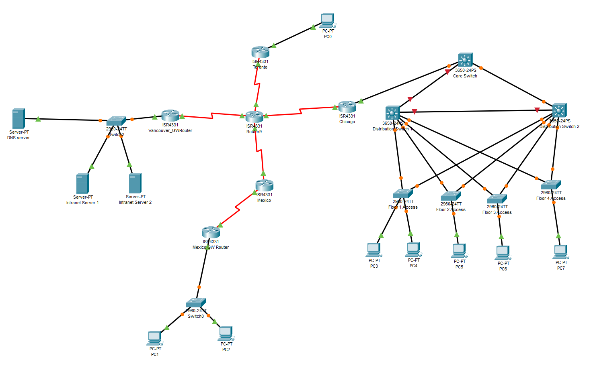
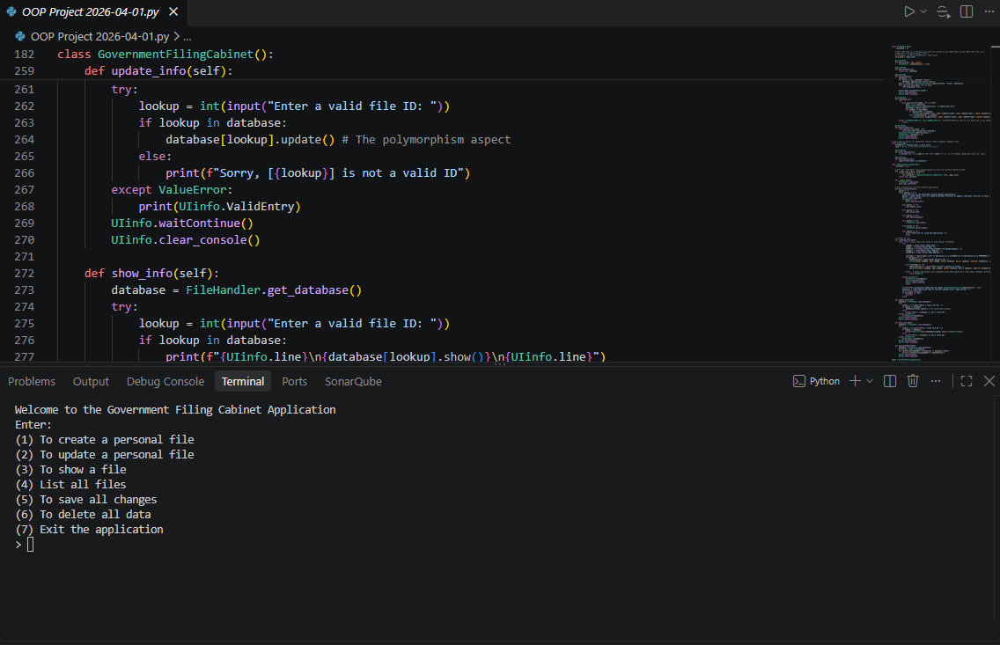

My Projects
These are some of the projects I have done over my academic career

Networking 2 Final Project
Using Packet Tracer we were given a topology and to configure to how the assignment demands

Object Oriented Programming Final Project
Using Python, me and my group designed a rudimentary government filing cabinet application that is similar to real ones
Networking 2 Final Project
Using Packet Tracer we were given a topology and to configure to how the assignment demands
Object Oriented Programming Final Project
Using Python, me and my group designed a rudimentary government filing cabinet application that is similar to real ones